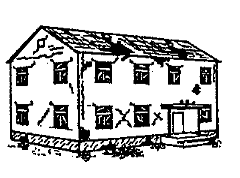
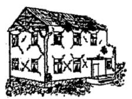

Introduction
Hazard information is a critical input to disaster risk management, building resilience of urban areas, infrastructure and communities. The Open Access to Risk Information area of engagement aims to make high-quality risk information available faster and at lower costs, and develop new tools that allow decision-makers and communities to collect, share, and understand risk information.
The ThinkHazard! project was initiated in 2015 to facilitate greater access to hazard information and risk management guidance for development sector professionals. The open access thinkhazard.org website enables users to screen potential project locations for the existence of multiple natural hazards, then to obtain guidance on how to manage the risks to their project, and any impacts of their project on the local hazard. Version 1 of ThinkHazard! was used over 140,000 times in 200 countries, and has been adopted into World Bank Operations Portal for core use in project planning. This report has been updated to reflect new hazards and revisions in methodology, made in the development of ThinkHazard! version 2, released in July 2017.
ThinkHazard! is developed and maintained by the Global Facility for Disaster Reduction and Recovery (GFDRR).
Objective of ThinkHazard!
Hazard information is a critical input to disaster risk management (DRM) and building resilience of urban areas, infrastructure and communities. Interpretation of hazard information to determine potential impact and, in turn, implement robust a risk management strategy requires knowledge of often highly technical data. Additionally, hazard data is generated in many different formats from many organizations. If the data is made available publicly at all, it is via a growing number of online sources and data portals. So, the task to find hazard data sets, decide which data set to use for a given purpose, and then interpret the data can require an increasing amount of time and prior knowledge.
DRM projects have too often been executed without full appreciation of the range of hazards and level of each hazard that exist in a project area. This can result in underestimation of disaster risk and development of a project that is potentially not robust enough to withstand the impacts of one or more hazards that could affect the project in the future. Access to, and appropriate use of hazard and risk information remains a barrier to mainstreaming DRM into development projects.
ThinkHazard! is an analytical tool dedicated to improving knowledge and understanding of natural hazards. It was envisioned that the ThinkHazard! primary user would be development sector professionals, who need to gather hazard information while planning projects. However, the benefits of ThinkHazard! stretch beyond the development sector, into general education about global distribution of multiple hazards and how to manage them.
To achieve its objectives, the online user interface has a simple structure and workflow, comprising, 1) a location search function, 2) an overview of hazard level for 11 hazards for a selected location, and 3) a hazard-specific screen that presents risk management guidance, relevant contact information and further information in the form of useful websites and reports for that hazard and location.
ThinkHazard! can be accessed at: www.thinkhazard.org. Begin typing your location of interest (country name, region or district) and select the correct location from the drop-down. Hit enter, and you will be taken to the overview of hazards for that location. From there, you can view more detail on any of the hazards (including guidance on reducing risk, useful resources and contacts), and you can navigate to more specific and neighboring locations using the map.
Feedback
User feedback is a vital component of ongoing improvements and updates to ThinkHazard!. Users are able to provide feedback on any topic concerning the tool, via the feedback form available on the user interface. Feedback is delivered to the administrator, who will action any required changes and log requests for new features. If the feedback concerns new data for use in the tool, the administrator will follow up to review the data suitability for ThinkHazard!.
Technology
ThinkHazard! uses open-source code, available at on GitHub.
New versions can be developed using the open-source code as a basis, by including new recommendations and branding. Further, new functionality can be developed as required, and the tool linked to different data repositories. Versions specific to an organization or sector can be developed using this code to provide coverage of particular hazards, or to tailor recommendations more specifically to sector requirements. Sector-specific versions of the tool may have damage thresholds tailored to that sector, for example, using construction standards for critical facilities to determine the intensity of event that could be considered damaging.
How to Use this Guide
This guide describes the hazard levels shown in ThinkHazard!, and how the raw hazard data is classified into hazard levels. A general section describes the use of global and local data, and how the tool uses multiple sources of hazard data for the same area. It then presents sections showing the classification of data for each hazard in turn, because the method varies from hazard to hazard.
Classifying hazard levels
ThinkHazard! communicates level of hazard for 11 natural hazards, for each Administrative Unit 2 (ADM2) globally, in the classes High, Medium, Low, and Very Low. The hazard levels are used to communicate how aware a user needs to be of each hazard when planning a project at a selected location. Hazard level is aggregated to ADM1 and ADM0 unit levels, providing a view of hazard for users with a less certain project location, or projects spanning large areas in a country. The four hazard levels are derived from hazard maps, which present the spatial distribution of hazard intensity (e.g., flood depth, ground shaking) at a given frequency, or ‘return period’ (e.g., Figure 2). A hazard map is the visualization of hazard at one point of a frequency-severity curve; the distribution of hazard intensity varies differs at each frequency. Such maps contain valuable information on where and how often an event of certain magnitude or intensity might occur, but often require specialist knowledge for interpretation. Often, it can be difficult to identify and access such maps. ThinkHazard! aims to overcome these issues by collating specialist hazard maps and communicating hazard level accurately but more simply for hazard non-specialists.
Hazard levels can be described as: • High: Users should be highly aware of potentially severe damage from this hazard for the project location. Without taking measures to mitigate the hazard and risk, high levels of damage can be expected to occur within the project or human lifetime (and potentially frequently in that timeframe, for hydro-meteorological hazards, e.g., floods, extreme heat).
• Medium: Users should be aware of potentially damaging effects of this hazard for the project location. Potentially damaging events can be expected to occur within the project or human lifetime and measures to mitigate the hazard and risk should be considered. For hydro-meteorological hazards, damaging effects could occur frequently in that timeframe.
• Low: Potentially damaging events are less likely to occur within the project or human lifetime but are still possible. Measures to mitigate the hazard and risk would be prudent at critical locations. Hazard has been classified based on long-term averages, and there is still potential that damaging events could occur in this timeframe.
• Very Low: Available data suggest that potentially damaging effects are unlikely to occur, on average, in the project or human lifetime. Hazard has been classified based on long-term averages, and there is still potential that damaging events could occur in this timeframe.
• No Data Available: No dataset covering the chosen location is currently available in ThinkHazard!
NOTE: The timeframe considered in classification of each hazard is dependent on historical data available to assess long-term averages, and the timescales over which the hazard causal processes operate. This is elaborated later in this chapter. Hazard data is available at different geographic scale, spatial extent or domain, and content. It can be provided as probabilistic data, providing estimated hazard severity and frequency, or index data showing susceptibility of an area to a hazard. The type of data typically differs between hazard – earthquake and flood are generally available as probabilistic data but landslide is not. Different organizations also provide different data according to their geographic remit or focus on one hazard or one group of hazards. It has been necessary to develop a consistent framework of classification, but which is implemented in different ways to accommodate different data types. The sections below describe the input data types, data storage, selection of data source, and the classification process.
Input data types
ThinkHazard! accepts data in raster (grid) format only. It classifies probabilistic and index-based data using different methods, though the theory remains consistent. Probabilistic data are commonly available for: flood (river, urban and coastal), earthquake, cyclone, extreme heat, wildfire, water scarcity, and tsunami. Probabilistic data are produced for landslide and volcano in local-scale analysis, but at the global scale data are more commonly available as a spatial susceptibility index for landslide. For volcanic hazards there are very limited global sources of information: a spatial hazard index is available, but otherwise the other global source is a catalogue of previous events. Probabilistic data are imported to ThinkHazard! directly and all classification is conducted in the tool algorithms, described in section 0. In some cases, pre-processing is required to convert data into a format accepted by ThinkHazard!. Pre-processing comprises spatial analysis and / or data conversion prior to use in ThinkHazard!, using external GIS software such as ArcGIS or QGIS. This is described in section 2.4.2.
Data storage
GeoNode, an open source geospatial content management system, is used to store all hazard data and additional information layers for ThinkHazard!, which is set up to retrieve data directly from a defined GeoNode server. The current version of ThinkHazard! harvests data from the GFDRR Innovation Lab GeoNode (geonode-gfdrrlab.org). ThinkHazard! administrators curate input data directly in GeoNode (see Section 7). This includes hazard data upload and metadata curation using the template shown in Appendix 3: Metadata template. The metadata template is adapted from an ISO standard to contain additional information specifically required for ThinkHazard!, including: hazard type, intensity unit, geographic coverage, return period and hazard set ID (all used in hazard classification), and data quality score (used in deciding which data set to use in classification). Documents provided in the further information section of ThinkHazard! are also managed in GeoNode.
GeoNode is also used in ThinkHazard! to communicate layer and document metadata and provides the route for users to download data. Clicking on a ‘data source’ or ‘further information’ link in ThinkHazard! takes the user to GeoNode, from where they can download publicly available data and reports, or navigate to the data owners’ website for access. License information for data is also stored in the layer metadata and communicated via GeoNode.
Hazard data selection
ThinkHazard! aims to uses the best available hazard information to derive the hazard level for each administrative unit. A data selection algorithm determines which layer to use in classifying hazard levels, where more than one hazard data set is available for a hazard and ADM2 Unit (see Figure 3). This algorithm is based on the spatial extent of the data, identified from its metadata; and a data quality rating, which is stored in metadata by ThinkHazard! administrators according to criteria in Appendix 4: Data Quality Criteria.
The data quality criteria provide a high-level assessment of ‘Scientific Quality’ (i.e. is the data produced using a peer-reviewed method; is it official government data) and ‘Calculation Method Quality’, which focuses on the fidelity of the hazard model and its components (e.g. resolution of base data, vintage of analysis).
Hazard data may be available with global, regional or national coverage, depending on the scope of the generating project, or intended primary use of the data. ThinkHazard! can accept all levels of data, and implements a hierarchical selection to prefer local data (regional and national) where it is available, over global data. Global data is considered to provide a less robust view of hazard for an individual country than local data, because it is generally produced at lower resolution, and uses a greater number of global assumptions (not tailored to a regional or national situation). However, global data can provide a consistent view of hazard across all (or most) countries and is valuable in the absence of data with more local extent, which is expected to be of greater fidelity due to its more focused scope.
To summarize the data selection algorithm, conducted for each ADM2 Unit: 1. If only one dataset is available, that dataset is used by default to classify hazard level; 2. If more than one dataset is available, the dataset with the highest summed data quality score is used to classify hazard level; 3. If more than one dataset is available, with equal summed data quality scores, then local data is preferred over global data to classify hazard level; NOTE: The data quality scores are assigned for the purposes of ThinkHazard! are in no way a judgment on the applicability of the data for other applications.

Classification Process
The ThinkHazard! hazard classification employs a spatial analysis that intersects raster hazard data, with a global raster layer describing every ADM2 Unit in the world. The ADM2 raster is derived from the FAO GAUL vector dataset of administrative unit boundaries . Three levels of administrative units are used in ThinkHazard!: ADM0 (country), ADM1 (e.g., state in the U.S.) and ADM2 (e.g., county in the U.S.).
Following the above data selection process, to determine which layer should be used for which ADM2 Unit, ThinkHazard! imports the selected data from the GeoNode database, classifies the hazard level and stores the hazard level for each hazard and ADM2 Unit in the tool database. This hazard level is communicated in text descriptions on the user interface, and the spatial distribution of hazard is also shown in the map window.
The classification of hazard level is based on the aim to communicate how aware a user needs to be of each hazard when planning a project at a selected location, or alternatively, how frequently a project location may sustain damage from a hazard. The process relies on defining a level of hazard intensity, above which damage may occur, and the likelihood of that intensity occurring at each location.
Probabilistic data
ThinkHazard! uses frequency and severity information to communicate how frequently a project location may sustain damage from a hazard. This is a well-defined process for probabilistic data, which provide both elements required for this assessment (estimates of hazard frequency and severity).
To do this, we first identify an intensity level for each hazard, above which damage is expected to occur, and then assess how frequently that intensity might be exceeded. This information is available on frequency-severity curves, which are a product of probabilistic analysis (see Figure 4, right). The more common use of these curves is to define how severe an event would be at a defined frequency (Figure 4, left) to define required building strength, for example. The first formulation is chosen as the key communication point, because ThinkHazard! aims to help users prioritize and manage multiple hazards with the greatest chance of causing damage to their interests, rather than identify the exact impact (this should be done in a more focused risk assessment as part of the project).
Frequency of a hazard intensity being exceeded can be defined in terms of average recurrence interval, or return period, expressed as ‘1 in 100 years’, or the ‘100-year return period’. Alternatively, this can be expressed as the chance of the intensity value being exceeded on an annual basis: for the 100-year return period hazard this would be 1% chance of exceedance in any given year (1.0% = 1/100); for the 500-year return period this is 0.2% (0.2% = 1/500). This report uses return period as the reference to frequency. Longer return periods correspond to having a smaller chance that the damaging intensity will be exceeded during the reference timeframe lifetime, hence the risk of damage is lower.
Classification steps
A step by step procedure is applied to classify hazards based on probabilistic data in ThinkHazard!. This procedure is applied for each ADM2 Unit: 1. Hazard = HIGH if hazard intensity exceeds, at any location in the ADM2 Unit, the damaging intensity threshold at the shortest return period (highest frequency threshold);
Hazard = MEDIUM if (1) is not satisfied and if hazard intensity values exceed the damaging intensity threshold at the medium return period;
Hazard = LOW if (1, 2) are not satisfied and if the hazard intensity values exceed the damaging intensity threshold at the longest return period (lowest frequency threshold);
Hazard = VERY LOW if (1, 2, 3) are not satisfied in data values given for the ADM2 Unit.
NO DATA is recorded if there are no data values given for the ADM2 Unit.
The ‘damaging intensity threshold’ and ‘frequency threshold’ are described in the next two sections.
Damaging intensity threshold
Damaging intensity threshold, the intensity above which damage would be expected to occur, is defined specifically for each hazard (Table 1). In this version of ThinkHazard! the type of project is not specified by the user, and guidance is intended to be project- and sector-agnostic, to be applicable to a wide range of project types. The defined damage threshold is therefore not tailored specifically to account for damage to any specific group of structures or infrastructure. Conservative (i.e. low) damage thresholds are used because they are intended to reflect intensity that can cause damage for projects in International Development Association (IDA) countries, in which investments may be more vulnerable (in relation to construction and/or availability of resources for recovery). Therefore, the thresholds used may be not be realistic in relation to highly-engineered structures. Later sector-specific versions of ThinkHazard!, may have damage thresholds tailored to that sector, for example, using construction standards for critical facilities to determine the intensity of event that could be considered damaging.
The three intensity thresholds for a hazard can be identical across the hazard levels, or they can differ to provide the flexibility to further distinguish each hazard level. For example, earthquake shaking reaching intensity VI on EMS98 scale are considered damaging for most projects, so the equivalent ground acceleration value of 0.1 g is defined as the intensity threshold for very low, low and medium hazard. For high hazard, the threshold reflects an intensity value typical of more damaging events that cause damage to structures: 0.2 g. In doing so, the number of high hazard zones is reduced compared to if a threshold of 0.1 g had been used, preserving the significance of high hazard by not distributing ‘high’ widely.
Hazard data for the same hazard may be provided with different intensity units. For example, earthquake ground acceleration can be provided in gal, g as a decimal, or g as a percentage. Flood depth may be provided in m, cm, or dm (decimeter). The unit for each data layer is defined in its metadata, and ThinkHazard! classifies the data according to the correct unit.
A summary of damaging intensity parameters, units and thresholds used in the classification of probabilistic data (only one common unit shown for hazard):
| Hazard | Intensity parameter | Intensity Unit |
| ||||||||
| Earthquake | Acceleration (PGA) | g | 0.2 | 0.1 | 0.1 | ||||||
| Extreme heat | Wet Bulb Globe Temperature (WBGT) | °C | 32 | 28 | 25 | ||||||
| River flood* | Inundation depth | m | 0.5 | 0.5 | 0.5 | ||||||
| Urban flood* | Inundation depth | m | 0.5 | 0.5 | 0.5 | ||||||
| Coastal flood | Inundation depth | m | 2 | 0.5 | 0.5 | ||||||
| Cyclone | Mean wind speed | km/h | 80 | 80 | 80 | ||||||
| Tsunami | Coastal maximum amplitude | m | 2 | 1 | 0.5 | ||||||
| Water scarcity | Water availability | m3/capita/yr | <=500 | <=1000 | <=1700 | ||||||
| Wildfire | Canadian Fire Weather Index | FWI | 30 | 20 | 15 | ||||||
- Although river flood and urban flood data are provided as probabilistic data, it was found in ThinkHazard! version 1 that use of a damaging intensity alone overestimates high hazard (it is common for flood data to have a very small number of cells attributed to high hazard, which overestimate the hazard for the whole ADM2 Unit). Therefore, it was decided to use an additional spatial assessment in a pre-processing stage, to classify hazard based on a minimum area exceeding the damaging threshold. Further information is given in section 8.1.
Frequency thresholds
Frequency thresholds determine which hazard level is assigned to a location, given that the damaging intensity threshold is achieved. These thresholds are assigned on a hazard-specific basis, based on de facto standards for a given peril – i.e. the return periods at which data are usually produced. The common return periods reflect the timescales over which a hazard operates. For example, damaging floods occur more frequently than earthquakes due to atmospheric process operating on much shorter timeframes than tectonic processes.
Return periods may vary depending on the source of the data: earthquake data are more commonly produced at the 100, 250, 500, and 1000 years by the insurance industry due to their required outputs, instead of the standard 475, 975 and 2475 years used by researchers and engineers. For flood data, return periods commonly include some but not all of 5, 10, 25, 50, 100, 500, and 1000 years. ThinkHazard! has some flexibility to account for these differences in the classification, i.e., a 475 or 500-year return period is used to classify medium hazard. This enables as many datasets as possible to be used. De facto return periods do not exist for all hazards. In these cases, the frequency thresholds are defined using expert judgement based on the frequency of impacts. Generally, hazards threatening life due to construction damage (earthquake, cyclone, volcanoes) can be assessed considering, at a minimum, a 50 years lifespan. Hazards threatening people’s living conditions more regularly (flood, drought) are often assessed using shorter durations (e.g., 10 years).
ThinkHazard! uses the return periods given in Table 3Error! Reference source not found. to classify hazard based on probabilistic data. A value range indicates the maximum range that can be used in the calculation. The administrator can determine the exact return period used by including (or excluding) certain return periods from data storage and import to ThinkHazard!.
Suggested return periods for each hazard classified from probabilistic data:
| Hazard |
| ||||||||
| Earthquake | 100 - 250 | 475 - 500 | 1000 - 2500 | ||||||
| Extreme heat | 5 | 20 | 100 | ||||||
| River flood | 10 | 50 | 1000 | ||||||
| Urban flood | 10 | 50 | 1000 | ||||||
| Coastal flood | 10 | 50 | 100 | ||||||
| Cyclone | 50 | 100 | 1000 | ||||||
| Tsunami | 100 | 500 | 2500 | ||||||
| Water scarcity | 5 | 50 | 1000 | ||||||
| Wildfire | 2 | 10 | 30 | ||||||
Pre-processed data
Preprocessing of data into a format suitable for ThinkHazard! may be needed if: 1. Original hazard data are not available with frequency and severity information as provided by probabilistic data. These are ‘non-probabilistic data’. a. Volcanic hazard data, globally, is not is not widely communicated probabilistically, so global hazard levels can only be derived based on databases of eruptive histories. Hazard data for individual sites / small areas may be the exception. See section 8.9 for more information. b. Landslide hazard data. Global landslide data is presently available as susceptibility classes or hazard classes, because there is insufficient historical information to understand the frequency of events on such a wide scale. See section 8.10 for more information. c. Note that probabilistic data for the volcanic and landslide hazards are more likely to be available at regional and local scale. Where such analysis is available, we will seek to use the information in ThinkHazard!.
Available hazard data do not intersect administrative units, preventing use of the general procedure. This is true of some coastal hazard data, e.g., tsunami, which are often provided as data points at some distance offshore because there is high computational expense of simulating flow onto land large areas. Depending on the location of points, some pre-processing is required to transfer the data points to the coastline or onshore. This is may be through spatial analysis to relocate points with the same values, or may involve analytical steps that account for change in values to the new location (e.g., application of tsunami run-up equations). See section 8.7 for more information.
Where classification of intensity is insufficient to determine variations in hazard level at the Administrative Unit scale. River flood and urban flood damaging intensity thresholds are found to be exceed at least one grid cell in most Administrative 2 Units, leading to a large proportion of areas with high hazard. This was the case in ThinkHazard! version 1, and makes it difficult to define and communicate the truly high hazard areas. To resolve this, hazard classification in ThinkHazard! version 2 uses the ‘area of an Admin 2 unit flooded’ to the damaging intensity, which identifies the units with most area flooded to a damaging flood depth. See section 8.1 for more information.
Aggregating hazard levels
Hazard classification is conducted for at the level of ADM2 Unit. That is, ThinkHazard! calculates the hazard level for each Admin 2 Unit in the world, by applying the process shown in section 2.4.1.1 to the grid cells within each ADM2 Unit boundary. The hazard level of a higher level ADM1 or ADM0 units is defined as the maximum hazard level in all lower units that it contains. In Figure 5, the Moroccan ADM1 unit named Center comprises eight ADM2 units. At the ADM2 level, there are some classified as ‘Low’ hazard (e.g. Settat) but the maximum hazard level is ‘High’ (Azilal and Beni Mellal) so the hazard level of ADM1 unit Center, is classified as ‘High’. The hazard levels in the six ADM1 units of Morocco are ranked in this example as either ‘Low’ or ‘High’. The ADM0 unit (Morocco) takes the maximum hazard level: in this case, ‘High’.
The aggregation process means that, in the extreme case, just one ADM2 unit in a country categorized as ‘High’, would result in the user seeing a ‘High’ hazard level for the whole country. This is intentionally conservative, so that ThinkHazard! shows the maximum hazard in any ADM unit. This is to safeguard against underestimating the overall hazard, when a large area (e.g., Province or country) is selected. The hazard map on the user interface provides further context, showing the distribution of hazard level across ADM units within the selected unit, enabling the user to see how the hazard level varies across the whole unit.
Communication of hazard levels
Hazard level is communicated through text description and color. On the location overview page, the horizontally arranged hazard icons are colored according to hazard level (High: red, through orange, to Very Low: yellow). On the overview page, the 11 hazards are listed vertically according to hazard level, with a colored text label.
On the hazard-specific page, the colored icons of all hazard are retained, and a colored text label specific to the hazard is shown. All icons are shown on every page, to always highlight the presence of multiple hazards, and to provide easy navigation to other hazards. The spatial distribution of hazard is also shown in the map window. The map window provides limited user navigation. The user can select neighboring units, or zoom in and out to hierarchically-associated units (e.g., from ADM0 to ADM1 to ADM2, and vice versa).
There is a text description of what the hazard means for the user, in terms of the likelihood of damage, and encourages the user to take the hazard into consideration appropriately. For example: ‘In the area you have selected river flood hazard is classified as high based on modeled flood information currently available to this tool. This means that potentially damaging and life-threatening river floods are expected to occur at least once in the next 10 years. Project planning decisions, project design, and construction methods must take into account the level of river flood hazard. The following is a list of recommendations that could be followed in different phases of the project to help reduce the risk to your project. Please note that these recommendations are generic and not project-specific.’ A brief statement is made to describe the potential impact of climate change on the hazard. This statement is derived from expert knowledge of the hazard, and IPCC reports, and is specific to the hazard and the region. For example: ‘Climate change impacts: High confidence in an increase in intense precipitation. The present hazard level is expected to increase in the future due to the effects of climate change. It would be prudent to design projects in this area to be robust to river flood hazard in the long-term.’
Risk management guidance
One of the most important goals of ThinkHazard! is to help users manage disaster risk in their projects, not only to identify the hazard level. This guidance takes the form of: 1. recommendations on how to address the risk from each hazard; 2. links to further resources, such as other data sources, reports on risk management options, or risk analyses relevant to that hazard and/or location; and 3. Contacts information of organizations working on the hazard in that country.
Risk management recommendations
ThinkHazard! displays hazard level for selected locations, not risk level (it does not estimate risk based on exposure and vulnerability to hazard). However, to maximize utility for user, technical recommendations are provided describing actions to be taken to manage risk to the project, based upon the classified hazard level. The recommendations have been developed by external experts in each hazard, consulted for this project. The recommendations are project agnostic (not specific to any project type or sector such as education, agriculture, or sanitation).
Recommendations comprise a short summary statement, which is shown on the user interface, and a more detailed description of risk management actions, which is accessed by clicking on the ‘more information’ link at the end of each summary statement. The recommendations have been developed to provide guidance in non-technical language, and to provide practical actions specific to each hazard.
A recommendation may be repeated for more than one hazard category, but higher hazard categories generally have a greater number of recommendations, comprising a greater number of, or the more serious, actions required to manage the highest level of hazard. Each technical recommendation comprises a short summary, which is presented on the user interface, and a more detailed section that can be accessed by clicking the hyperlinked short title. The technical recommendations cover subjects such as seeking professional guidance, considering early warning systems, or not increasing the hazard through the actions of the project. Please see the user interface for examples.
Further resources
The user interface includes a section providing further resources to the user. This comprises links to documents, analytical tools and websites that provide information relevant to the hazard and selected location. The resources may provide information on previous projects in the area, general advice on managing risk to a hazard, or provide a link to relevant agencies and tools for further analysis.
All resources are stored on the same GeoNode as hazard data layers, and imported to ThinkHazard! for display. The resources are filtered by hazard and location, according to their metadata, and are displayed in chronological order in the user interface. A user downloads or accesses a link via the GeoNode record for that document.
Contact Information
Contact information has been compiled for every country and hazard included in ThinkHazard!. This comprises organization name, website URL, telephone and email address, for up to three organizations per hazard and country. This list was last compiled in early 2017. It will be periodically reviewed and updated as new versions of ThinkHazard! are developed.
Other tool features
Downloadable hazard reports
Hazard level information, map, risk recommendations, further resources and contact information for all hazards and a single location can be downloaded as a .pdf document. The ‘download pdf’ button is available on all overview and hazard pages.
User feedback
User feedback is a vital component of ongoing improvements and updates to ThinkHazard!. Users can provide feedback on any topic concerning the tool, via a link to a feedback form, available in the header of the user interface. Feedback is provided via a short series of questions in a Google Form. The administrator notified, and will action any required changes and log requests for new features, responding to the feedback provider as appropriate. Users can propose additions or amendments to resources or hazard data, and can highlight where hazard levels do not match expectations. If the feedback concerns new data for use in the tool, the administrator will follow up to review the data suitability for ThinkHazard!.
Languages
ThinkHazard! is currently available in three languages: English, French and Spanish. All components of the tool are available in these languages, except for the feedback form (English only). The language toggle button is in the header of every page on the user interface. Translation has been conducted by World Bank translators, using Transifex.com.
Data map
A global map of data coverage is provided via a link in the header bar. This show, for each hazard, the availability of different levels of hazard data. Clicking on a country provides a list of each available data set.
Frequently Asked Questions
A page of non-technical FAQs is available to users via a link on the header bar.
Extracting and re-using content
The ThinkHazard! API enables extraction of hazard levels, recommendations, further information and contacts, into code for re-use in other tools. The API instructions are at thinkhazard/API.md at master · GFDRR/thinkhazard.
Licenses
ThinkHazard! is available under the GNU General Public Licence, Version 3, 29 June 2007. Text content is licensed under CC-BY-SA. Classified hazard levels are licensed under CC-BY. Original hazard data are licensed under their original terms, which are contained in the associated layer metadata.
Architecture and technical workflow
Open source architecture
ThinkHazard! uses open-source code, available at https://github.com/GFDRR/thinkhazard. The code can be replicated and amended to develop versions specific to an organization or sector. Potential amendments include including different hazards, or showing a subset of the present hazards. Recommendations may be tailored to a specific use (e.g., with a focus on managing risks in the agricultural sector). Additionally, the underlying method may be adjusted, for example by changing the classification of hazard levels; if the intended focus of the tool related to minimum building standards, it may be appropriate to revise the intensity threshold at which damage can be expected to occur. It is also possible to link the user interface to a different set of layers and resources on a different GeoNode.
Database structure ThinkHazard! uses two dedicated databases, populated with data harvested from a GeoNode. The processing database is used for data administration/preview, and the public database is used for visualization of information in the user interface.
Tasks performed using the processing database include: 1) harvesting and processing of hazard data from GeoNode; 2) modification of recommendations (content, order, hazard level link) via the administrator interface. A preview interface is available, for administrators to verify any updates to information (i.e., correct data and recommendations) before publication to the public database.
The public database is a copy of the processing database at a given time. To maintain performance of the user interface, data shown in the user interface are retrieved from the pre-calculated hazard levels stored in this database, rather than using on-the-fly data retrieval and processing. The public database is dropped and replaced by a new version each time the administrator decides to publish the data. At the same time, an archive of the database is stored in case of any future requests of data before the latest version. This archive is accessible to administrators only. The current database version number is presented on the About page. An update to the public database is required when: 1. Changes have been made to recommendations, contact information, or climate change statements 2. New data is available on the GeoNode, or changes have been made to existing data layers (including change of data content, or metadata). Updates can only be made by administrators, using prescribed commands.
Technical workflow – hazard classification
Hazard levels are not classified ‘on-the-fly’ (i.e., as a user requests them) because the processing time required would slow down the user search. Instead, classified hazard level is stored for each hazard against each ADM2, ADM1, and ADM0 Unit in the database. The user interface pulls data from that database upon a user requesting data in the user interface. This enables very fast operation of the user interface, but does require administrators to update the tool database when new data are available. The technical workflow (contained in the ThinkHazard! processing code) identifies all hazard layers on GeoNode that are identified in metadata as being for use in ThinkHazard!. These layers are downloaded to the processing database, before being assessed for ‘completeness’. Completeness includes: 1) a valid hazard set must contain a data layer for each return period frequency threshold that is used in the classification; 2) data layers in a hazard set must all have matching spatial extent, origin, and resolution. The following hazard classification is then conducted:
- All complete and previously unprocessed hazard sets are identified. These are datasets that have changed since the last execution of this process. Datasets that have already been processed are already in the production database, and are not reanalyzed.
- For each hazard set:
- All ADM2 units that intersect the data set bounding box are selected.
- The hazard classification is conducted one ADM2 unit at a time. Calculations are made on individual ADM2 units to avoid memory problems.
- For each selected ADM2 unit:
- An extent corresponding to the current ADM2 (vector polygon) is read from the raster hazard dataset matching the return period used for the currently analyzed hazard level.
- If there are hazard intensity values in the selected extent, the ADM2 unit vector is converted to a raster with resolution to match the hazard raster. If there are no values, a value of ‘No Data’ is stored in the processing database for this ADM2 unit.
- This raster includes all pixels that intersect fully or partially, the ADM2 unit polygon (so that hazard pixels along the ADM2 unit boundary are accounted for). This raster is applied as a mask on the hazard dataset raster.
- If the data set is a pre-processed layer:
- The maximum hazard intensity value in the masked area of the data set is selected.
- This value is compared against the hazard intensity thresholds.
- The corresponding hazard level is stored for the ADM2 unit, in the processing database.
- If the data set is not pre-processed (i.e. is probabilistic), the following process is performed with the thresholds corresponding to each hazard level (in the order of High, Medium, and Low):
- The maximum hazard intensity value in the masked area of the data set is selected.
- This value is compared against the hazard intensity threshold for the High hazard level, on the return period data layer corresponding to the High Hazard frequency threshold.
- If the intensity threshold is exceeded, High hazard level is stored for the ADM2 unit, in the processing database.
- If the High hazard threshold is not exceeded, the process is performed on the Medium hazard threshold and data. If Medium hazard threshold is exceeded, Medium hazard level is stored for the ADM2 unit.
- If the Medium hazard threshold is not exceeded, the process is performed on the Low hazard threshold and data. If Low hazard threshold is exceeded, Low hazard level is stored for the ADM2 unit.
- If none of the three hazard levels are exceeded and there are intensity values, the value ‘Very Low’ is stored.
- A decision is made on which dataset to present in ThinkHazard! (i.e. which values to store in the public database), if there has been more than one dataset available to classify hazard levels.
- Outputs of the above process are prioritized according to:
- Data quality
- Geographic status (local or global)
- Date of last update
- The dataset with highest priority is identified, and the hazard level for each hazard and ADM2 unit are passed through to the public database and take the first one for each ADM2 entity
- Aggregation of ADM2 hazard level to ADM1 and ADM0 is performed:
- Aggregation to ADM1 is conducted by identifying the maximum hazard levels in all its ADM2 ‘child’ units
- Aggregation to ADM0 is conducted by identifying the maximum hazard levels in all its ADM1 'child’ units
- For each ADM Unit (2, 1, 0) and hazard, hazard level is stored in the database
- Outputs of the above process are prioritized according to:
Hazard specific classification methods
This section describes in more detail, the hazard classification process for each hazard. This section does not explicitly describe the data sources used for all hazards. The latest data sources can be viewed on the data map at thinkhazard.org and on geonode-gfdrrlab.org.
River Flood and Urban Flood Hazard Levels
The methodology for urban and river flood hazard classification was updated for ThinkHazard! version 2. River flood and urban flood hazard are classified using a threshold of ‘area flooded to damaging intensity threshold’. The damaging intensity threshold is 0.5 m for both types of flood. The area threshold is 1% of the ADM unit for river flood, and 4% of the ADM unit for urban flood (due to the additional surface flooding included in urban flood, comparably larger areas are flooded) Hazard is classified using frequency thresholds of 10, 50 and 1000 for high, medium and low hazard, respectively. The full river and urban flood hazard classification methodology, developed by SSBN Ltd., is provided at the public ThinkHazard! Methodology Google Drive folder.
Intensity
Flood hazard intensity is most commonly expressed as the water depth at a specific location, indicating severity of a flood. Flow velocity may also be given in high resolution local data but required a high level of detailed modeling. Think Hazard! is a global application, so water depth is used as the damaging intensity threshold. In determining a suitable intensity threshold, the European joint research project RiskMap recommends four water depth classes: <0.5 m; 0.5-1.0 m; 1.0-2.0 m; and >2.0 m. The values represent typical thresholds for which significant changes in damages on buildings occur:
- 0.5 m: Flood mitigation by sandbags and other preliminary measures are no longer possible. This is a typical height of tables and light switches.
- 2.0 m: The first floor and its interior are completely flooded.
A 0.5 m threshold is used; this provide a conservative damage threshold in line with the scope of ThinkHazard!. In version 1, global data used a threshold of 1.0 m due to concerns about uncertainties in the low-resolution elevation data leading to under- and over-estimation of depth at individual grid cells. Research by SSBN shows that at the ADM2 scale to which data are aggregated in ThinkHazard!, any errors seen in individual grid cells are largely cancelled out across the whole ADM2 Unit. In development of version 1 there was over-estimation of hazard when using a 0.5 m or a 1.0 m threshold. This overestimation was due to the presence of at least one grid cell exceeding these depths in most ADM2 Units, which resulted in a majority of ADM2 Units being classified as high hazard. After aggregating maximum hazard level to ADM1 and ADM0, most of the world was classified as high flood hazard. The updated methodology, considering the area flooded to a given depth threshold, overcomes the overestimation of hazard when basing the method solely on the presence of at least one grid cell exceeding the intensity threshold.
Frequency
The selected frequency thresholds for flood hazard are related to likelihood of experiencing flood in a human lifetime. This can be described as shown for the German Federal Office for Citizen Protection and Disaster Support (BBK, 2010; Table 3). An alternative approach to using ranges of return periods, would be to interpolate between maps for different return periods to obtain a map for the required period. This requires spatial interpolation of hazard intensity, and uncertainties in the linearity of event boundaries and intensity distributions. Therefore, it was proposed to allow the algorithm to select a dataset within a range of return periods (100-1000 years). In version 2, the methodology explicitly uses the 1000-year return period. The following frequency classes are used in ThinkHazard! version 2:
- high: 10-year return period
- medium: 50-year return period
- low: 1000-year return period
| Name | Return period | Rationale |
| High | 10 years | In many cases a River Flood event of once per year or once every five years already causes considerable damage. NOTE: This return period may not be available in all flood hazard assessments. Therefore, it is proposed to allow ThinkHazard! to use 25 years as an alternative. |
| Medium | 50 years | An event that would, on average, be expected to occur once or twice in a lifetime. |
| Low | 10,000 years | An event most people will not experience and will only be remembered by previous generations. NOTE: Often the 10,000 year return period will not be available. It is proposed to use the highest available return period (and longer than 50 years) for the ‘Low’ hazard class. This can typically be between 100 and 1,000 years. |
| Very low | Intensity not exceeded at the ‘low’ return period used. | No floods expected based on current climate, current models and data. However, some uncertainty remains. |
Coastal flood is classified using onshore flood depth data, provided as frequency-severity data in raster format. The methodology follows that described in section 2.4. The damaging intensity thresholds are 2 m for high hazard, and 0.5 m for low and medium hazard. Hazard is classified using frequency thresholds of 10, 50 and 100 years for high, medium and low hazard, respectively.
- For low and medium thresholds, 0.5 m: Flood mitigation by sandbags and other preliminary measures are no longer possible. This is a typical height of tables and light switches.
- For high threshold, 2.0 m: The first floor and its interior are completely flooded. More threat to life occurs with this threshold.
- high: 10-year return period
- medium: 50-year return period
- low: 100-year return period
## Water Scarcity Hazard Levels
Hazard is classified using a Water Stress Index, which reflects the availability of water per person per year – a measure of water stress based on hydrological drought and water use. Water scarcity is the only hazard in ThinkHazard! that uses an ‘inverse damaging intensity threshold’. All other hazards are classified based on intensity value being exceeded. Water scarcity becomes more serious as the water availability decreases, so a lower water availability per capita per year translates to higher hazard. Hazard is classified as high, when water availability is <500 m3capita/yr at the 5-year return period. Hazard is classified medium when water availability is <1000 m3capita/yr at the 50-year return period. Finally, hazard is classified low when water availability is <1700 m3capita/yr at the 100-year return period.
- high: 5-year return period
- medium: 50-year return period
- low: 1000-year return period
| Name of category | Best-case RP | Average RP | Best-case chance | Average chance | Rationale |
| High | 5 years | 2 years | 20% | 50% | This category represents areas where water scarcity is common but do not occur every year. Many countries in this category experience water stress every other year. |
| Medium | 50 years | 25 years | 2% | 4% | The 50 years return period was selected to represent water scarcity that occur once or twice in a lifetime. It corresponds to a large increase in number of water provinces which fall in this category. |
| Low | 1000 years | 250 years | 0.1% | 0.4% | Water provinces and countries in this category experience droughts less than once in a human life time, but they may occur occasionally. |
| Very low | >1000 years | 1*10^(24) years | 0% | 0% | In this category no water stress is expected based on longest return period under the current climate, current models and data. However, some uncertainty remains. |
For each water province and available return period it was then calculated whether Falkenmark’s threshold of 1700 m3 per capita per year was met. In other words, for each water province and return period it was determined if water stress would occur. Figure 15 shows the number of countries with a WCI below 1700 m3 of renewable water resources per capita per year for several return periods. This graph is used as basis for the categorization.
Results of classification
The resulting water scarcity map per water province and per ADM2 Unit is shown in the figures below. The analysis was made on water province level first, because it is assumed that within a water province (a combination of watershed and countries borders) distributing of available water will occur towards water scarce areas when needed.

Tropical Cyclone Hazard Levels
Tropical cyclone is classified using wind speed, provided as frequency-severity data in raster format. The methodology follows that described previously. The damaging intensity threshold is 80 kilometers per hour for all hazard levels, using frequency thresholds of 50, 100 and 1000 years for high, medium and low hazard, respectively.
Cyclone data used for hazard classification is the UNISDR Global Assessment Report 2015 (GAR15) . Based on the metadata, the “tropical cyclonic strong wind and storm surge model uses information from 2594 historical tropical cyclones, topography, terrain roughness, and bathymetry”. Topography was taken from the Shuttle Radar Topography Mission (SRTM) of NASA, which provides terrain elevation grids at a 90 meters resolution. The dataset covers the return periods 50, 100, 250, 500 and 1000 years, containing the peak wind velocity in kilometers per hour (km/h). No return period more frequent than 50 years is available from GAR15. Note that this data does not include extra-tropical cyclone winds, for example those that affect Western Europe. Also note that this data does not include the impact of cyclone-induced storm surges. Storm surge is available in another GAR15 dataset, but is represented in ThinkHazard! as one component of a coastal flood dataset (section 8.2).
Intensity
The intensity of cyclones is described by the wind speed, e.g. below figure. Based on literature review, an intensity threshold of 80 km/h is applied, which corresponds to the 50-60 miles per hour (MPH) hurricane warning threshold applied by NOAA (U.S. National Oceanic and Atmospheric Administration). The intensity threshold also corresponds to the Beaufort scale 9, described as “strong/severe gale – [at which] first damages occur”.
Frequency
For cyclones, there are no community standards with respect to the frequency classes or return periods. Therefore, it is recommended to use the frequency classification as applied for river flood, based on human experience. However, as there is no global dataset with a return period more frequent than 50 years, the classification is as follows: The following frequency classes are used in ThinkHazard! version 2 (unchanged from version1):
- high: 10-year return period
- medium: 50-year return period
- low: 1000-year return period
Results of classification
Next figure shows the results of cyclone hazard classification based on GAR15 data.
Extreme Heat Hazard Levels (new in version 2)
Extreme heat hazard classification is based on daily maximum Wet Bulb Globe Temperature, provided as frequency-severity data in raster format. The methodology follows that described in section 2.4. A specific temperature threshold is defined for each hazard level, at the 5, 20, and 100-year return periods, as described below. The full river and urban flood hazard classification methodology, developed by VITO, is provided at the public ThinkHazard! Methodology Google Drive folder.
Extreme Heat hazard is classified based on an existing and widely accepted heat stress indicator, the Wet Bulb Globe Temperature (WBGT, in °C) – more specifically the daily maximum WGBT. The WBGT has an obvious relevance for human health, but it is relevant in all kinds of projects and sectors, including infrastructure related, as heat stress affects personnel and stakeholders, and therefore the design of buildings and infrastructure. In general, the WBGT is a relevant enough proxy to quantify the strain on physical infrastructure (energy, water, transport), such as increased demands for water and electricity, which may also affect decisions related to infrastructure.
Intensity
Heat stress studies in the scientific literature that make use of the WBGT apply thresholds of 28°C and 32°C to categorise heat stress risk. The damaging intensity thresholds are applied folling this definition of slight/low (<28°C), moderate/high (28-32°C) and severe/very high (>32°C) heat stress:
Frequency
There are no standard return periods used in research or engineering design concerning extreme heat events. However, most scientific studies use a 20-year return period in analyzing extreme heat events. This return period is included and because of the consistency with existing literature, results for this return period can be easily compared and verified with previous studies. A short return period (5 years) reflects more frequent extreme heat events, and the longest return period that can be generated based on the 30 years of available daily maximum WGBT data is 100-year return period. For longer return periods, the uncertainties in projected intensity become too large due to the inherent uncertainties in the statistical processing of the input data. The following frequency classes are used in ThinkHazard! version 2:
- high: 5-year return period
- medium: 20-year return period
- low: 100-year return period
Results of classification
The classification of hazard at ADM2 Units based on a global probabilistic WBGT extreme heat dataset developed by VITO specifically for ThinkHazard!, is as follows:
Earthquake Hazard Levels
Earthquake hazard is classified using peak ground acceleration (PGA, representing ground shaking), provided as frequency-severity data in raster format. The methodology follows that described in section 2.4. The damaging intensity threshold is 0.2 g for high hazard and 0.1 g for medium and low hazard, using frequency thresholds of 100-250 years, 475-500 years, and 1000-2500 years for high, medium and low hazard, respectively.
Earthquake hazard maps generally consist of a grid of the expected peak ground acceleration (PGA) with a 10% chance of being exceeding in a 50-year interval, which translates to a return period of 475 years. Fifty years is often considered as a standard lifespan for infrastructures. For example, the following map was recently published by the SHARE European project. The 475-year return period is a typical choice for seismic design codes for normal buildings whereas longer return periods are used as the basis of critical infrastructure such as bridges or dams (nuclear installations use even longer return periods, e.g. 10 000 years).
ThinkHazard! uses UNISDR GAR15 data to provide global coverage for earthquake hazard, but across the world relies on many regional and local datasets available in the GeoNode to provide higher resolution hazard data with fewer global assumptions. Where available, the higher resolution datasets are utilized in the hazard classification.
Intensity
The severity of earthquake impact is commonly measured according the effects of the shaking on humans and structures. For example, the European Macroseismic Scale (EMS-98) ranks earthquakes on a 12-degree scale from “not felt” to “completely devastating”, each intensity degree denoting how strongly an earthquake affects a specific place. Intensity is subjective, determined according to post-disaster survey, from the observed effects of the earthquake. The European Macroseismic Scale (EMS98), ranks seismic shaking according to effect on people, buildings and the environment. An event of EMS VI is considered to cause ‘slightly damaging’ effects to structures (Table 5), such as fine cracks in plaster, and can be felt by most people. Shaking with intensity VII result in stronger effects: people are frightened, cracks appear in buildings, and chimney start collapsing. According to widely acknowledged correlations between intensity and PGA, intensity VI corresponds approximately to a 0.1 g and intensity VII to 0.2 g. Some earthquake hazard data are available only in EMS or Modified Mercalli Intensity (MMI). In such cases, data are converted to PGA value using conversaion equations before storage on GeoNode and import to ThinkHazard!.
Illustration of probability of damages for vulnerable buildings according to the intensity of seismic shaking (EMS98)
| Degree of damage for vulnerable buildings |  |  | ||
| Intensity VI | Many buildings | Some buildings | ||
| Intensity VII | Many buildings | Some buildings |
Hazard dataset provide seismic hazard different for PGA. To enable those datasets to be included in ThinkHazard!, several units are accepted in the processing algorithm, which can read PGA in terms of a decimal or percentage value of Gravity (g), or PGA in terms of SI units (e.g., gal or cm/s2) (see Table 6).
Conversion table for units of earthquake data
| Paramete unit |
| |||||
| PGA-g | 0.2 | 0.1 | ||||
| PGA-g-per | 20 | 10 | ||||
| PGA-gal | 196.133 | 98.066 | ||||
| PGA-cm/s² | 196.133 | 98.066 | ||||
| PGA-m/s² | 1.961 | 0.981 | ||||
Frequency
The earthquake field has standard frequencies for presenting earthquake hazard, for which maps are available from many projects. The standard used by research and engineers is to present 475, 975 and 2475 years. More commonly the 100, 250, 500, 1000, and 2500 years are used by the insurance industry. ThinkHazard! leverages these standards in setting the return periods to maximize the data that can be incorporated. Preferred values for return periods are:
- High: 1 in 100 years (10% chance the value is exceeded in 10 years, 50% in 50 years)
- Medium: 1 in 475 years (2% in 10 years, 10% in 50 years)
- Low: 1 in 2475 years (0.4% in 10years, 2% in 50 years)
If 2475-year return period data are not available, 975-year is an acceptable value (5% chance of exceedance in 50 years) for the longest return period, since it still corresponds to a low probability of exceedance on the lifespan of common projects. If 100-year return period data are not available, 250 years is an acceptable value (4% chance of exceedance in 10 years or 20% in 50 years) for the shortest return period, since it still corresponds to a high probability of exceedance on common projects lifespan. For medium return period, data can also be fund for 500-year return period. The 250 and 500-year return periods are often available in datasets produced for the financial sector.
Tsunami Hazard Levels
Tsunami hazard data at the scales appropriate for use in ThinkHazard! is generally presented as maximum wave amplitude or height, usually at 100 m water depth, provided as frequency-severity data in raster format. The methodology follows that described in section 2.4. The damaging intensity threshold is 2 m for high hazard, 1 m for medium hazard, and 0.5 m for low hazard, using frequency thresholds of 100 years, 500 years, and 2500 years for high, medium and low hazard, respectively.
It is decided that a threshold of 0.5 m should be used for low hazard, as it represents a height at which land and buildings are flooded, and which allows for some uncertainty in offshore values of tsunami translated to potential onshore impacts. A value of 1.0 m for medium hazard is proposed to distinguish areas of known hazard e.g., Eastern Mediterranean Sea from areas of lower hazard (e.g., Western Africa). High hazard is classified using a higher threshold of 2.0 m, which corresponds to the depth at which building damage ratio increases significantly, based on post-disaster surveys in Japan, 2011 (MLIT, 2012). GFDRR commissioned analysis by the Norwegian Geotechnical Institute, Geoscience Australia, and INGV Italy (under the umbrella of the Global Tsunami Model) to make data developed by Davies et al. (2017) openly available at several return periods. The dataset provides run-up values calculated at offshore hazard points, which have been projected to the shoreline by simple interpolation (described in the NGI report, in ThinkHazard! Methodology Google Drive folder). These coastal values have been rasterized at 0.01-degree resolution (c. 1km at the equator) for import to GeoNode and Thinkhazard!.
An alternative pre-processing approach can be used to better define potential areas of onshore inundation, which identify low-lying areas where tsunami may inundate far inland. This can lead to non-coastal ADM2 units being assigned a hazard level, which would otherwise not be identified in the global data. This approach relies on SRTM elevation data, which are not available for the entire domain of global tsunami data, therefore use of this approach is limited to national or regional data. Due to the associated computational requirements and aggregated hazard levels presented by ThinkHazard!, it is not appropriate to conduct full inundation modelling to define onshore inundation height and extent. It is instead proposed to apply a simple ‘bathtub’ method which compares wave height from each point, to ground elevation within 10 km of the coastline. This distance is expected to incorporate the maximum inundation of any tsunami. This processing procedure is as follows:
- Extract the pixels covering the coast zone (to 10km inland) from SRTM30 tiles covering the tsunami data extent.
- Produce a buffer polygon around each tsunami data point, to a distance sufficient to intersect the first 10 km inland from the coastline. Assign the point data value to the corresponding polygon.
- Rasterize the polygon layer, aligned with SRTM raster cells, with maximum value of the buffered polygons assigned to the raster value.
- Perform a raster calculation; Inundation depth is calculated as tsunami height minus SRTM elevation. Where inundation depth is negative, it should be set to zero (the ground is not inundated).
- This process is repeated for each return period layer to produce one ‘bathtub’ inundation map per return period for import to ThinkHazard!
An alternative approach to this, is to use an attenuation-based approach, which applies a degree of attenuation to the tsunami data points, to better represent the potential height inland. The attenuation relationship used is derived from post-tsunami surveys of inundation height decreasing with distance inland (Leonard et al. 2008). Another alternative is to use tsunami run-up equations to estimate tsunami run-up inland. Both approaches would be best suited to local data, and retain a significant amount of uncertainty in the onshore heights produced. These approaches and their impact on hazard level may be explored in future. Next table example of pre-processed rasters for tsunami in Indonesia. Red zones show regions were wave height exceeds both elevation and the threshold on the buffered coastline
| RP100 years, Red: h>2m | RP500 years, Red: h>0.5m | RP2500 years, Red: h>0.5m |
Intensity
Tsunami hazard is the potential for damage by massive volumes of water flowing onshore, with high velocity and depth, as tsunami waves. Damage occurs due to the force of waves, debris contained in the waves, floatation and scour of structures, and deposition of sediment/rocks. Tsunami waves are generated primarily by submarine earthquakes displacing the water column above, but also landslides or volcanic eruptions, which can displace large volumes of water if they occur underwater or at the coast. Small tsunamis can have very localized effects. The largest tsunamis, generated along subduction zones, can travel across the whole ocean affecting coastlines of multiple countries and inundating long distances and up to several kilometers inland, depending on topography. Tsunami hazard data is commonly probabilistic and provides a view of hazard (generally wave height, rather than velocity) for multiple return periods. Data may be available as onshore inundation maps (typical of local analyses, e.g., for a city or province) or, more commonly for large areas such as national or global analysis, point data at locations offshore. Due to the computational overheads of simulating the nearshore and onshore flow of tsunami, data points are often spaced several kilometers (or tens of km) apart and are located offshore, e.g., at the 100m isobath (water depth). On the other hand, availability of inundation maps is likely to be limited, since models have very high technical and computational requirements.
Frequency
Tsunami hazard data do not have de facto standard frequencies. However, given tsunamis’ primarily tectonic causes, the timescales used are commonly in the range of 100 to 2500-year return periods are used. Analysis commissioned for ThinkHazard! has enabled global tsunami data at 10, 50, 100, 200, 500, 1000, and 2500-year return periods to be openly available. Return periods of 100, 500, and 2500-year are used to define high, medium and low hazard, respectively.
Results of classification
The classification of global data results in the following distribution of hazard levels:
Volcanic Hazard Levels
Hazard levels are defined outside of ThinkHazard!, using a combination of historical eruption records: maximum recorded eruption size (Volcanic explosivity index) and last known eruption date).
A volcano is a place where magma comes to the surface, during volcanic activity. Volcanoes present potential threats to people and property, due to:
- Proximal hazards, affecting the area within 100 km around a volcano
- Lava flows are very hot materials that can destroy the built environment and can release harmful gases.
- Pyroclastic flows are a mixture of extremely hot rocks, sediment and gases that moves downhill, destroying most things it encounters and depositing large quantities of debris.
- Lahars are flows of water, rock and sediment that destroy most things they contact, and deposit large quantities of debris. They can occur without an eruption during wet weather when rainfall mobilizes loose volcanic material.
- Distal hazards, affecting larger distances
- Ash (or tephra) consists of small fragments projected in the air during eruption, which drop over large area. They cause health problems, disrupt services and agriculture, and the weight of ash (especially when wet) can cause roofs to collapse.
- Gases released into the atmosphere.
Eruptions can be relatively rare events, and volcanoes can remain quiet for several hundreds of years between eruptions. For most volcanoes globally, there is little information to assess how frequently eruptions might occur, and how big they might be in an eruption. For some well-studied volcanoes this information is available through assessment of previous deposits. Ashfall modelling is gradually providing more data that shows potential depth of ash at multiple return periods, though a lack of eruption data introduces significant uncertainties to the outputs. Volcanic hazard levels are defined outside of ThinkHazard!, using a combination of historical eruption records: maximum recorded eruption size (Volcanic explosivity index) and last known eruption date). Several global eruption databases record the coordinate location, dates, type and magnitude of past eruptions. The Smithsonian Global Volcanic Program (GVP) and LaMEVE databases contain a volcanic eruption index (VEI) which quantifies the eruptive magnitude of past events. These are the best global information from which we can classify volcanic hazard, however, they contain significant uncertainty. Volcanoes with no recorded eruption, or that has never erupted in living memory may pose a hazard. The most widely used measure of volcanic intensity is VEI. Volcanoes can display variable VEI in different eruptions, and VEI varies over time during the same eruption. The maximum eruption VEI per eruption are provided in the GVP and LaMEVE eruption databases. The maximum VEI at each volcano forms the basis of the intensity thresholds used in preprocessing. Not all volcanoes in these databases have an associated VEI value. Where this is the case, date of last eruption is used (section 7.2.3.1). Where VEI is available, VEI 3 is used as a threshold to define a non-explosive volcano (those with a VEI < 3), are rated as ‘Low’ hazard. Volcanoes with maximum VEI > 5 are rated High, and those with a maximum recorded VEI 3-5 are ‘Medium’. The above is done in combination with consideration of the eruptive history (dates of previous eruptions). The most available, but basic, measure of eruption frequency is date of last eruption. Many volcanoes do not have a complete history of all eruptions because the average time between eruptions is can be several hundred or thousand years (these tend to be the volcanoes with more powerful eruptions) so it is difficult to reliably and consistently compare frequency across all volcanoes in the GVP database. Conversely, some volcanoes erupt with surprising regularity – monthly or even daily – with much smaller eruption and little impact. Last eruption date is only a very approximate guide to frequency of eruption, and further work should be done in future to better define volcanic hazard level for ThinkHazard!. Considering the above, last known eruption data is used as a guide to eruption potential only if there is no VEI data for a volcano. If the last known eruption was over 10000 years ago, it is considered Low hazard; if the last eruption occurred within the last 2000 years ago, it assigned High hazard. Anything with a last know eruption in the intervening period is Medium. The procedure is applied as follows:
- For each volcano of the GVM database, location, date of last known eruption and the maximum VEI index is extracted from the database
- Hazard level is associated to the VEI index value (when available):
- If VEI≥5, then hazard level is high
- If 5>VEI≥3, then hazard level is medium
- If VEI<3, then hazard level is low
- If the VEI index value is not available, hazard level is associated according to the date of last known eruption:
- If it was recorded an eruption in the last 2000 years (CE), then hazard level is high,
If it was recorded an eruption in more ancient times, then hazard level is low - If no eruption of the volcano has been reported, then hazard level is low
To account for the fact that damage from a volcano does not occur only at the vent, but several tens of kilometers around the vent, the hazard level of each volcano is applied to a circular area around the volcano coordinate location. The maximum extent of proximal hazards is approximately 100 kilometers from a volcanic vent. This distance does not account for topographic influences that constrain the flow of lahars and lava. The resulting raster map of hazard levels provides a crude assessment of proximal volcanic hazard (excluding impacts of ash and gas), see Figure 27. This map is uploaded to the ThinkHazard! database. The tool then associates the hazard level to administrative units following the normal procedure: intersection with administrative polygons and maximum of hazard level on a given unit.
Results of classification
Future probabilistic classification
When available, probabilistically simulated ashfall data can be imported as maps of ash depth at multiple return periods, enabling hazard levels to be defined as described in section 2.4. However, such analysis are available for only a few regions, and are not typically represented at the multiple return periods required for ThinkHazard!. Work may have to be commissioned to achieve good coverage of volcanic ash hazard levels in ThinkHazard!. Probabilistic volcanic data are available as raster containing ash depth (mm) at each grid cell, or as maps of isopachs indicating the limits of ash depth distribution, for several return periods. Recommended ash depth thresholds for hazard levels are: 0.5 mm, 10 mm, and 50 mm. These values are selected based on differential impact. Ash thicknesses of 0.5 mm can impact transportation by reducing visibility and obscuring road markings. At 10 mm, minor damage to buildings and infrastructure may occur through ash infiltration requiring extensive clean-up and this thickness of ash may cause agricultural productivity loss (<50%) and health implications. At 50 mm, major agricultural productivity loss (>50%) and damage to buildings and infrastructure (i.e., potential roof collapse), ash infiltration to buildings and health implications would be expected (GVM, 2016). There is no industry standard frequency for presenting ash fall modeling. Frequency of eruption varies significantly for different volcanoes, but generally ash impacts are relevant presented at return periods greater than 100 years. A decision on recommended return period for probabilistic ash data would have to be taken on receipt of global ash modeling data, but it is expected that suitable return periods would include 100, 500, 1000, and 10000 years.
Landslide Hazard Levels
Classification Summary:Landslide susceptibility or hazard index is reclassified into four hazard levels. Presently, this is done differently for each hazard data source (see below). Investigations are underway to make this more consistent across multiple hazard sources.
Large-scale landslide hazard maps generally present landslide frequency per grid cell, derived from GIS-based analysis of terrain conditions to produce a landslide susceptibility map, and the coincidence of landslide triggers. Landslide is a locally variable hazard, but the factors determining landslide susceptibility are well defined (e.g., Nadim et al., 2006). Terrain factors include slope, land or vegetation cover, soil type and geological conditions, and soil moisture. This is often presented as a ‘susceptibility index’, or when combined with triggering factors, (precipitation and seismic activity) this may be presented as a ‘hazard index’. In either case, hazard is generally classified into discrete categories describing the frequency which landslide may occur there. This is consistent with availability of regional and national landslide data too. Probabilistic landslide data are rare, and only available on a local basis, sometimes including analysis of landslide runout to establish potential impact. It is envisaged that ThinkHazard! Will rely on using national, regional, or global landslide hazard maps, which present frequency of landslides, rather than such high-resolution local datasets. Two of the most prominent global landslide datasets are NASA SEDAC, which hosts the Global Landslide Hazard Distribution, v1 (CHRR, CIESIN and NGI, 2005), which presents landslide and avalanche hazard using an index of 6-10 (below 5 is considered negligible hazard). International Centre for Geohazards/NGI later produced a global landslide frequency map for the UNISDR GAR2013 (NGI, 2013), based on a similar method using global terrain and trigger data. This dataset presents expected annual probability per grid cell, and percentage of the grid cell of a potentially destructive landslide event. The available landslide hazard maps can be categorized into hazard level based on the frequency of occurrence, e.g., as used in the GAR13 data (table below), or based on the mapped hazard index, as supplied in SEDAC data. Given the variation in original data units and categories, it is necessary to apply a different processing method to each, while preserving a consistent conversion of landslide frequency into ThinkHazard! hazard levels. The categorization procedure applied to each of the available global datasets is described below: NGI GAR13 data are supplied as two raster datasets, each indicating the annual frequency of landslide due to seismic trigger and Rainfall (precipitation) trigger. The two rasters were combined for the purposes of ThinkHazard!, with the maximum annual frequency per grid cell assigned to the resulting combined trigger raster. The resulting raster was classified into four hazard levels defined by NGI (2013).
Annual frequency and corresponding raster score for landslide, based on NGI (2013)
Hazard class Annual frequency per km2 (1x10-4) Annual frequency per km2 Raster score (Ann. Freq. * 1,000,000) Negligible <1.8 <0.00018 <180 Low 1.8-3.2 0.00018-0.00032 180-320 Medium 3.2-7.5 0.00032-0.00075 320-750 High >7.5 >0.00075 >750 SEDAC data is available as a single raster dataset, giving landslide hazard as a decile value of relative global landslide hazard per grid cell. The range 5-9, was adjusted to 6-10 for consistency with other datasets. The original data layer is reclassified in GIS, to produce a raster containing hazard level, as follows (partly based on the classification description given in Dilley et al. (2005): 6 = negligible (translated to very low for ThinkHazard!); 7 = Low; 8 = Medium; 9-10 = High. After assigning a consistent integer value (1-4) to the processed hazard levels, the layers are imported to ThinkHazard!, where hazard level is mapped onto ADM2 units.
Future classification
Implementation of new dataset produced by NASA in 2017 (Stanley and Kirschbaum, 2017) is under investigation. This is a global landslide susceptibility map was created by combining information from four principal sources of information for five explanatory variables: slope, distance to fault, geological classification, presence of roads, and forest loss. Susceptibility is classified into five categories: very low, low, moderate, high, and very high. The classes are defined were divided at susceptibility values of 0.11, 0.49, 0.671, and 0.75. Each category was twice as large as the next highest, e.g., the high category contains approximately twice the number of pixels as the very high category (3% of the global area). It has been currently proposed to combine the very high and high categories into ‘high’, and transfer the remaining categories as originally defined. Investigation is required into how this relates to landslide frequency, and in consistency with the already implemented layers. Additionally, initial testing shows a tendency towards all ADM0 units showing high hazard, which poses a problem for communicating the truly high hazard areas. Investigation will also consider whether an area threshold (similar to that applied to river and urban flood) could be used to avoid this.
- If it was recorded an eruption in the last 2000 years (CE), then hazard level is high,